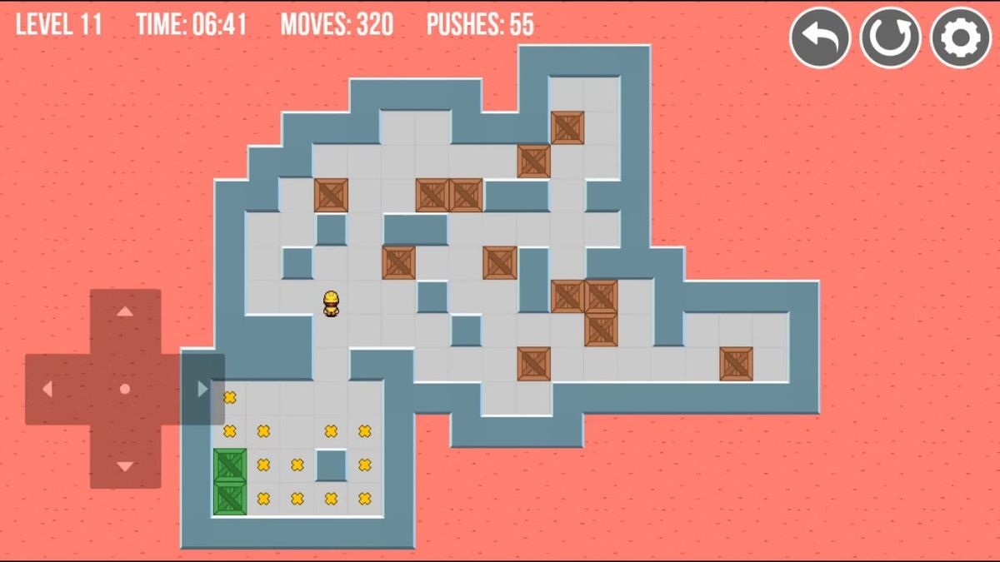

Le but de ce projet est de récréer le jeu du sokoban de façon "semi graphique". C'est à dire que c'est un jeu en terminal mais dans un terminal dynamique. Pour se faire, nous avons donc utilisé la librairie ncurses.

FONCTIONNEMENT
Le my_sokoban était un projet assez simple et rapide à faire. La première étape, qui a pour moi été la plus dur, était d'apprendre à utiliser les différentes fonctions de la librairie ncurses. J'ai donc commencé pour coder une petite gestion d'erreur pour vérifier qu'il y avait bien le même nombre de caisses que de cibles et bien un seul joueur. Une fois cela fait, le fonctionnement de ce programme était tout simplement de changer la position du joueur et des caisses dans la map avant de la réafficher. Il a donc fallut gérer les différentes collisions : impossible de se déplacer près d'un mur, bouger les caisses si aucun obstacle ne bloque etc... Il a aussi fallut gérer la position des cibles de sortes à ce qu'elles se replace une fois que le joueur ou qu'une caisse a été posée par dessus. Pour finir, il fallait tester à chaque mouvement si le joueur avais gagné ou perdu. Donc si les caisses étaient toutes placées au bon endroit ou si toutes les caisses étaient bloquées.
PROBLÈMES
Le principal problème que j'ai eu, qui a été une erreur de ma part, a été de commencer en stockant ma map dans une string. Cela a donc donné naissance à beaucoup d'erreurs et de complications notemment au niveau de la gestion de map de tailles spéciales. J'ai donc du recommencer tout mon programme (après l'avoir presque entièrement terminé) et stocker ma map dans un tableau. Hormis cela je n'ai eu aucun probèmes majeurs.
BONUS
Le seul bonus que j'ai fait pour le moment est cette page de mon blog qui explique les détails de ce projet. Par contre je compte bien ajouter à mon programme un timer qui va donner un temps maximum pour résoudre l'énigme.